核心目标只有一个：在瞬时高并发下既不超卖，也不把系统打垮。
| 压测场景 | HTTP 错误率 | 吞吐 | P99 | 超卖 | DB / Redis 库存 |
|---|---|---|---|---|---|
| 500 并发同步打点（JMeter） | 0%（500/500 成功） | 345.8 req/s | 1431 ms | 0 件 | 双 0，完全一致 |
| 单用户持续连点 30 秒 | 0% | — | — | 0 件 | 拦截 10932 次无效请求 |
库存 100 件 → 恰好成交 100 单 → 剩余 400 人收到「已售罄」。全部用例可复现。
一、项目简介
是什么：一个完整的限时秒杀业务闭环 —— 运营建活动配商品 → 定时预热库存 → 用户到点抢购 → 异步落单 → 15 分钟内支付 → 超时自动关单并回补库存 → 全天对账。
解决什么问题：
秒杀的技术难点不在于「卖东西」，而在于三个同时发生的矛盾：
- 瞬时流量是平时的几百倍 —— 如果每个请求都去
UPDATE stock = stock - 1，MySQL 行锁会瞬间把连接池打满，整个系统雪崩。 - 并发扣减必然超卖 —— 先查后改的两步操作，在并发下一定会读到过期数据。
- 异步化之后必然不一致 —— Redis 扣减成功、消息发出去了，但消费端挂了，用户「抢到了却没订单」。
针对这三点，系统的设计取舍是：把并发挡在 Redis 里，把落单交给消息队列，把一致性交给对账任务。
二、技术栈
后端
| 组件 | 版本 | 用途 |
|---|---|---|
| Java | 21 | 虚拟线程可用、record / switch 模式匹配 |
| Spring Boot | 3.2.5 | 应用骨架 |
| Spring Security + JJWT | 0.12.5 | 无状态 JWT 鉴权，@PreAuthorize 方法级权限 |
| MyBatis-Plus | 3.5.6 | ORM，条件构造器全部走参数绑定 |
| Springdoc OpenAPI | 2.3.0 | 在线接口文档（Knife4j 风格） |
后端按 多模块 拆分，避免一个 jar 里什么都塞：
seckill-common 通用返回、异常处理、雪花 ID、TraceId 过滤器
seckill-security JWT 签发校验、SecurityFilterChain、权限注解
seckill-domain 实体 / Mapper / 核心业务（预扣、落单、对账）
seckill-web 控制器、DTO 校验、Jackson 配置、启动类
前端
| 组件 | 版本 | 说明 |
|---|---|---|
| Vue | 3.4 | 组合式 API（<script setup>） |
| Vite | 5.2 | 构建，双前端独立产物 |
| Element Plus | 2.7 | 组件库 |
| Pinia | 2.1 | 登录态管理 |
| Vue Router | 4.3 | history 模式，子路径部署 |
| Axios | 1.6 | 统一封装：注入 token、401 自动刷新、错误提示收敛 |
用户端与管理端是两个独立工程，而不是一个工程里分角色 —— 因为二者的构建目标、包体、发布节奏完全不同，合在一起会让 C 端用户下载到一堆后台组件。
数据与中间件
| 组件 | 版本 | 在本项目中的角色 |
|---|---|---|
| MySQL | 8.4 | 最终事实来源，7 张表 |
| Redis | 7 | 库存预扣、已购记录、结果缓存、频控、RefreshToken |
| RabbitMQ | 4 | 异步落单，削峰 |
部署与工程化
| 工具 | 用途 |
|---|---|
| Docker Compose | 五服务一键编排（mysql / redis / rabbitmq / web / nginx） |
| Nginx | 单端口托管双 SPA（/user/、/admin/）+ 反代 /api |
| GitHub Actions | 后端 mvn test + package、前端双工程矩阵构建 |
| JMeter 5.6 | 500 并发尖峰压测（含同步集合点） |
| Playwright | 90 条交互断言，真实浏览器回归 |
三、项目功能模块
C 端 · 用户抢购站
- 注册登录 —— 用户名密码注册，BCrypt 加密存储，登录返回 accessToken + refreshToken，401 时静默刷新并重放原请求
- 活动大厅 —— 卡片网格展示全部活动，四种状态（待开始 / 进行中 / 已结束 / 已取消）分类筛选，卡片内含实时倒计时
- 活动详情 —— 活动横幅 + 倒计时，商品列表含主图、秒杀价与划线原价对比、剩余库存进度、每人限购标识
- 一键抢购 —— 点击后跳转结果页，客户端轮询结果（后端异步落单，前端不阻塞等待）
- 结果页 —— 抢购成功 / 排队中 / 已售罄 / 已达限购 四种终态，成功的展示订单号、金额、支付倒计时，并提供「立即支付 / 查看订单 / 继续逛」
- 我的订单 —— 订单列表含状态标签、支付倒计时，待支付订单可直接支付，支付后列表自动刷新
- 未登录拦截 —— 抢购时跳登录页并携带
redirect参数，登录后精确回跳原页面
B 端 · 运营后台
- 监控看板 —— 活动数 / 订单总数 / 累计成交额 / 今日数据四张指标卡，活动维度明细表（剩余库存、订单数、已支付、成交额），附口径说明避免误读
- 商品管理 —— 商品增删改查、主图、上下架状态，已被活动引用的商品禁止删除
- 活动管理 —— 一活动多商品建活动、编辑（仅待开始可改）、取消（同步清 Redis 库存键）、手动预热、按状态筛选
- 订单查询 —— 支持订单号 / 状态 / 活动 ID / 用户 ID 四维筛选，分页展示 300+ 订单
- 库存调整 —— 同时展示 DB 库存与 Redis 余量两份数据，支持增减调整，并明确告知是否同步到了 Redis
系统能力（非界面）
- 库存预热 —— 定时任务每 30 秒扫描，提前 5 分钟把库存写入 Redis（
SETNX保证不重复写） - 原子预扣 —— Lua 脚本一次往返完成「校验状态 → 校验限购 → 校验库存 → 扣减 → 记录已购」
- 异步落单 —— RabbitMQ 投递，消费者在事务内扣 DB 库存 + 写订单 + 标记已支付消息
- 超时关单 —— 15 分钟未支付自动关闭，库存回补 DB 与 Redis
- 库存对账 —— 定时比对 DB 与 Redis 库存，发现漂移告警
- 用户级频控 —— 1 秒窗口内重复请求直接拒绝
四、项目截图
用户抢购站
活动大厅 —— 四种状态分类、实时倒计时、进行中的活动高亮主按钮
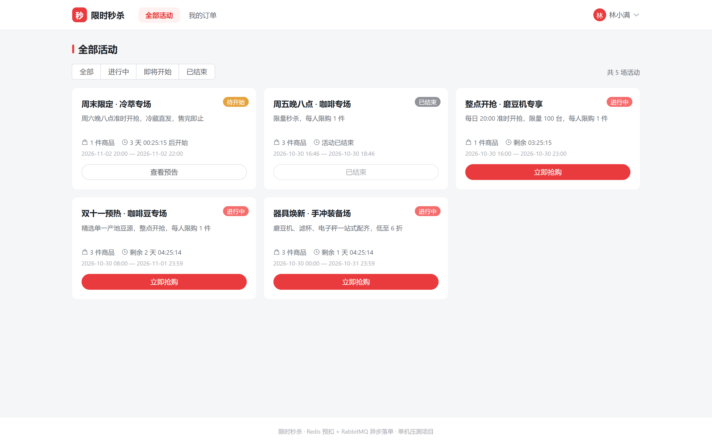
活动详情 —— 商品实拍图、秒杀价与划线原价、剩余库存进度、限购标签
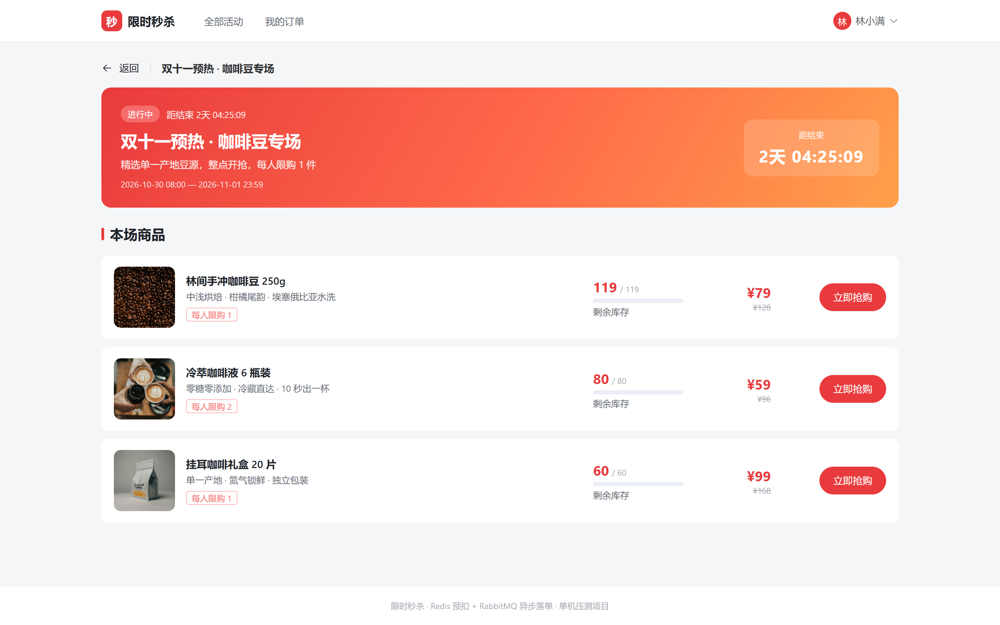
抢购结果 —— 异步落单完成后的终态页，含订单号与支付倒计时
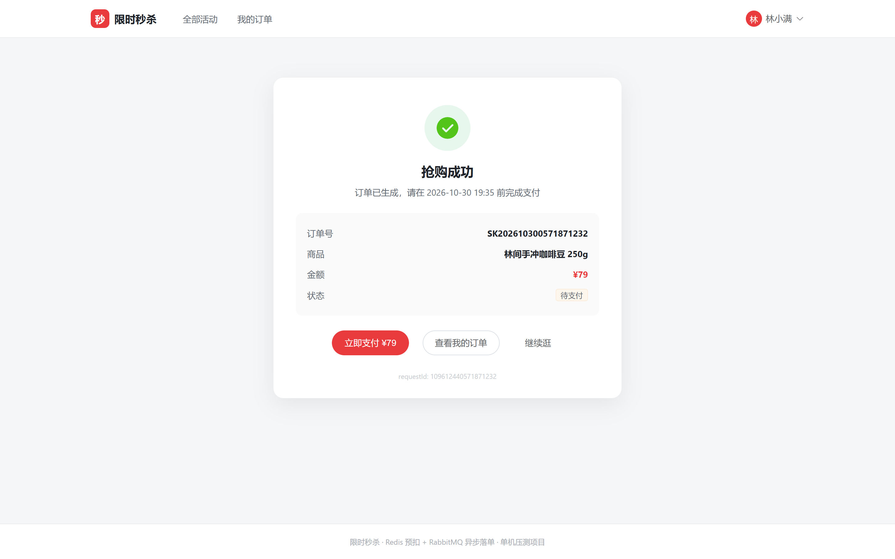
我的订单 —— 已支付 / 待支付分区展示，待支付带倒计时与支付入口
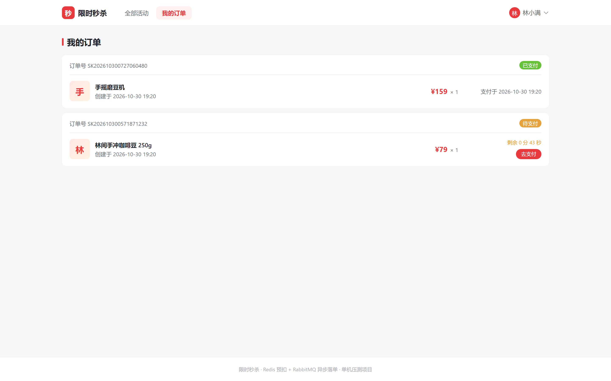
登录 / 注册 —— 双 Tab 切换，注册成功直接登录
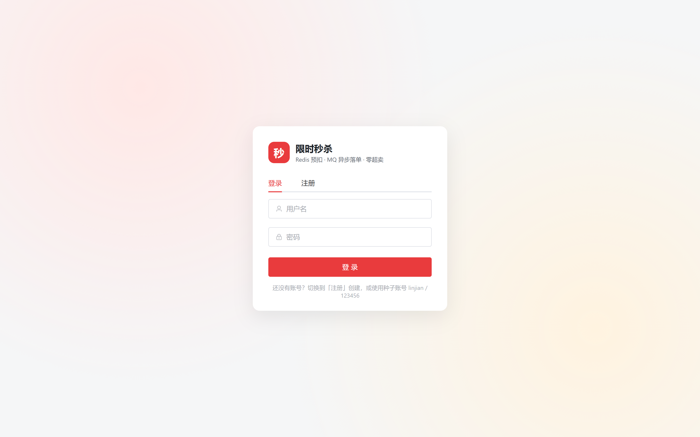
运营后台
监控看板 —— 核心指标卡 + 活动维度明细
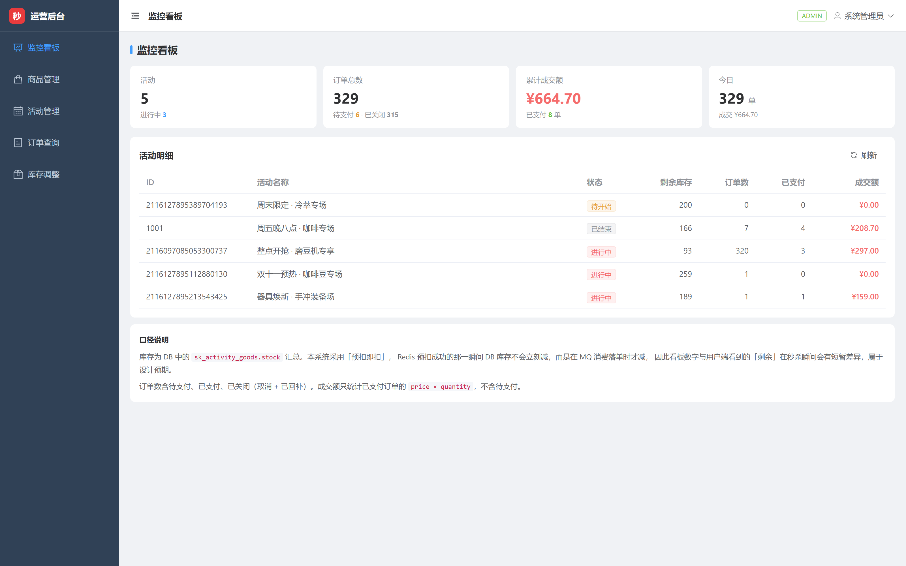
商品管理 —— 带主图缩略图的商品列表
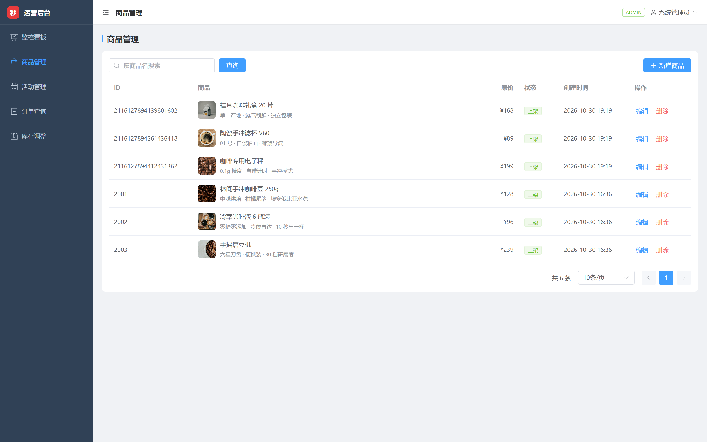
活动管理 —— 状态筛选、编辑 / 预热 / 取消 / 库存四个操作入口
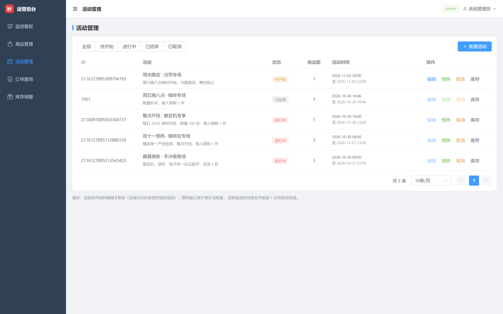
订单查询 —— 四维筛选 + 分页
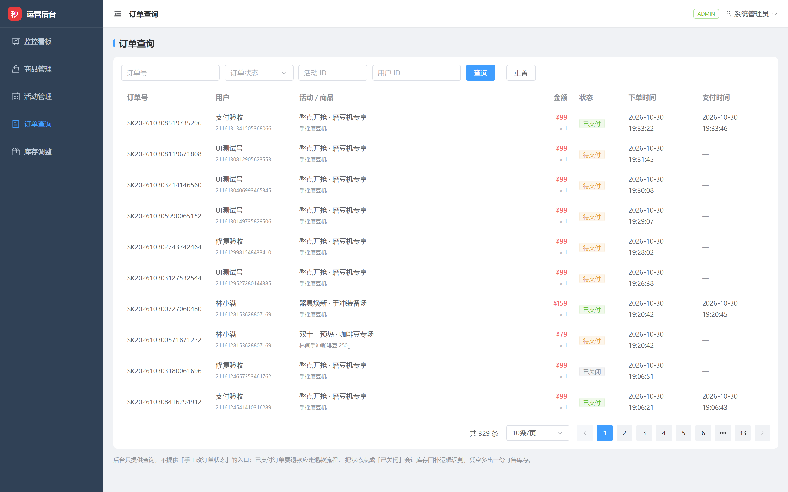
库存调整 —— DB 库存与 Redis 余量对照，调整后明确回执
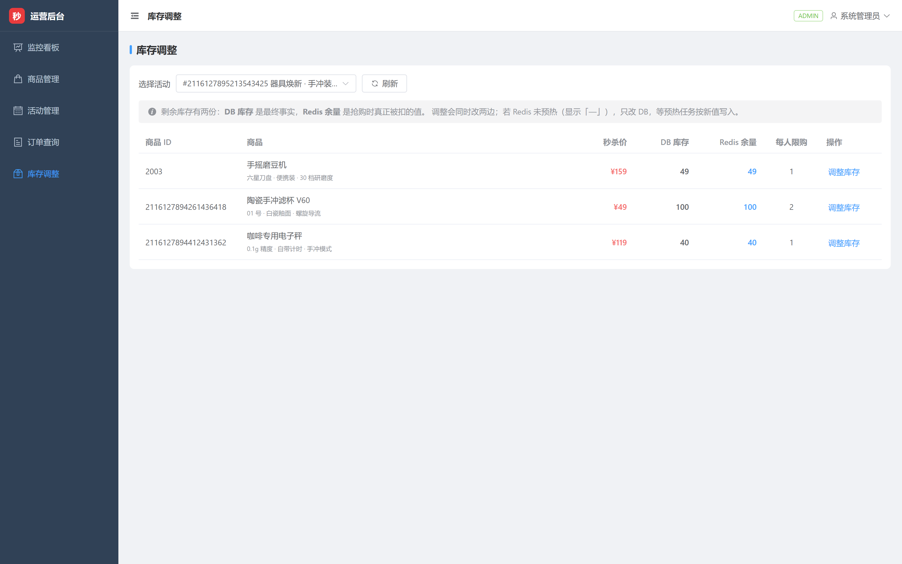
后台登录
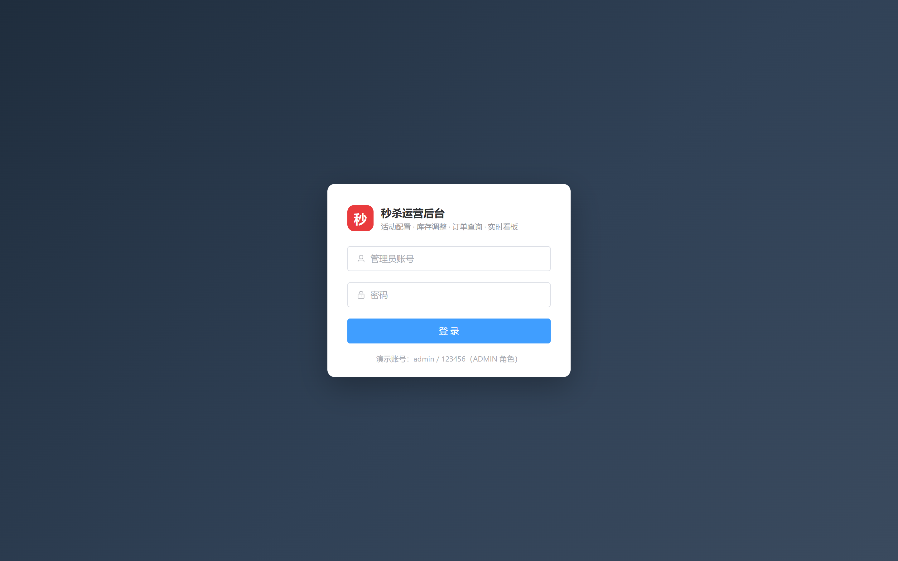
五、✨ 项目亮点与难点
亮点 1 · Lua 脚本原子预扣，把超卖挡在数据库之外
问题：查库存 → 判断 → 扣库存 三步在并发下必然超卖。加分布式锁能解决，但 500 并发意味着 500 次加锁排队，吞吐会被锁拖死。
做法：把三步写进一个 Lua 脚本，由 Redis 单线程原子执行。一次网络往返完成全部校验与扣减：
-- 伪代码，实际脚本含限购与状态校验
local stock = tonumber(redis.call('HGET', stockKey, 'remaining'))
if stock <= 0 then return -1 end -- 售罄
local bought = tonumber(redis.call('HGET', boughtKey, userId) or 0)
if bought + 1 > limit then return -2 end -- 超限购
redis.call('HINCRBY', stockKey, 'remaining', -1)
redis.call('HINCRBY', boughtKey, userId, 1)
return stock - 1
为什么不是分布式锁：锁的粒度是「整个商品」，Lua 的粒度是「一次操作」。前者让 500 个请求串行，后者让 500 个请求在 Redis 内部快速排队，单次耗时从毫秒级锁等待降到微秒级脚本执行。
效果：500 并发下库存 100 精确扣到 0，成交恰好 100 单，零超卖；同步链路全程不碰 MySQL。
亮点 2 · 本地消息表 + 定时补偿，解决「扣了库存却没订单」
这是分布式事务里最容易被忽略的坑。 Redis 扣减成功后，如果 RabbitMQ 投递失败、或消费者宕机、或事务回滚，用户就会「抢到了但查不到订单」—— 而库存已经扣掉了，等于凭空蒸发。
做法：三段式
- 发消息前先落本地消息表（与业务同库），状态
PENDING - 投递成功后标记
SENT，消费者处理完标记DONE - 定时任务扫描
PENDING超时记录重投，超过重试上限标记FAILED并告警
关键细节：重投必须幂等 —— 消费者靠 requestId 唯一索引兜底，重复消息直接返回已有订单，不会产生第二单。
效果：压测 200 单全程消息零丢失、订单零重复。
亮点 3 · 三层幂等，用户连点 30 秒只成交 1 单
秒杀场景下用户疯狂点击是常态，如果只靠前端防抖，等于没有防护。
| 层级 | 手段 | 拦截时机 |
|---|---|---|
| 第一层 | Redis 用户级频控（1 秒窗口） | 请求刚进来 |
| 第二层 | Redis 已购记录（Lua 内校验） | 预扣之前 |
| 第三层 | requestId 幂等表 + DB 唯一索引 |
落单之前 |
效果：单用户持续连点 30 秒共 10932 次请求，全部被前两层挡住，没有一条穿透到库存层。这不是「靠库存字段碰巧拦住」，而是每一层都有明确的拒绝原因返回。
亮点 4 · 预热与对账：让两份库存始终说同一句话
难点：Redis 是缓存，MySQL 是事实。两份数据一旦漂移，用户看到「有货」却抢不到，或「显示售罄」实际还有货。
做法：
- 预热：定时任务每 30 秒扫描「30 分钟内即将开始」的活动，用
SETNX写入库存键。用SETNX而不是SET是关键 —— 重启时如果活动正在进行，SET会把已扣减的库存重置回初始值。 - 对账：定时比对
sk_activity_goods.stock与 Redisremaining，不一致即告警。 - 调整库存：后台改库存时同时改两边，并显式返回
redisSynced字段告诉运营「Redis 是否同步成功」。
为什么后台要显示两份库存：曾经踩过一个坑 —— 只改 DB 不改 Redis，运营以为补了 50 件货，用户端却依然显示售罄。所以后台列表现在同时展示 DB 库存 与 Redis 余量，并把「Redis 未预热」显式渲染成 — 而不是 0。
亮点 5 · 雪花 ID 超 JS 安全整数：一个只有真实浏览器才能暴露的 P0
这是整个项目排查时间最长、也最有价值的 bug。
现象：用户抢购成功、订单已入库、库存已扣减，但结果页永远转圈，轮询 30 次后提示「结果确认中」。用户以为没抢到，实际抢到了。
排查过程：
- 接口返回 200、数据完整 → 排除后端异常
- DB 查到了订单，
request_id = 109597783211638784 - 而前端 URL 里请求的是
109597783211638780
末位数字被改写了。 雪花 ID 量级 1.1e17，远超 JS 的 Number.MAX_SAFE_INTEGER（9.007e15），JSON.parse 会在末位静默做舍入。
为什么之前所有测试都没发现：只有约 1/16 的 ID 恰好落在可精确表示的格点上。之前用 curl 验收（curl 不解析 JSON 数字），全部通过，把问题完全掩盖了。这个 bug 是浏览器实测才炸出来的。
修复方案与取舍：
最省事的写法是 serializerByType(Long.class, ToStringSerializer.instance) —— 所有 Long 输出字符串。但这样分页的 total 会变成 "308"，前端 v-if="total > pageSize" 和 el-pagination :total 都依赖数字类型，会引入新问题。
所以写了一个 LongSafeSerializer：仅当值超出 ±9007199254740991 时才写成字符串。雪花 ID 恒为大数、分页 / 库存 / 数量恒为小数，行为稳定且不破坏既有计算。
后续排查：修完后做全量回归时又发现库存页仍有一个残留点 —— 页面把 URL 参数 Number(preset) 转成了数字，…425 变成 …400，导致后端报「活动不存在」。这类问题必须逐个排查所有 Number() / parseInt() 的用法，光改序列化不够。
亮点 6 · 压测驱动的性能定位：P99 高不等于后端慢
现象：JMeter 500 并发报告 P99 1431ms，而单发 curl 只有 8–16ms。差了两个数量级。
定位：不是后端逻辑慢，而是三个叠加因素 ——
- 同机压测：JMeter 与后端跑在同一台机器（WSL2 内共享 CPU），压测工具本身吃掉大量资源
- 同步集合点：500 线程同时释放，瞬时排队
- 代理层：请求经 Nginx 反代多一跳
佐证：秒杀接口是「三次 Redis 往返」的轻量设计，落单走 MQ 异步，同步链路完全不碰 MySQL。既然不碰数据库，瓶颈就不可能在后端业务逻辑。
结论与取舍：压测报告把正确性指标（零超卖 / 库存一致 / 消息零丢失）作为第一优先，性能数据如实标注测试条件，不为了好看的数字去调参。这比编一个漂亮数字更有说服力。
亮点 7 · 安全加固：一次真实的渗透式自测
没有只读代码，而是把系统跑起来真实打了一遍，发现并修复了：
| 问题 | 危害 | 修复 |
|---|---|---|
| 默认 JWT 密钥硬编码在仓库 | 可离线伪造 username=admin 的 token，无需密码接管后台 |
启动时校验密钥，缺失或含默认值直接拒绝启动 |
| 秒杀结果接口未校验归属 | 用户 B 用 A 的 requestId 拿到 A 的订单号（IDOR） | 缓存键改为 sk:result:{userId}:{requestId} |
| 登录无失败锁定 | 可无限次撞库 | 失败计数 + 锁定窗口 |
pageSize 无上限 |
pageSize=1000000 拖垮查询 |
服务端强制上限 |
| 登出后 accessToken 仍有效 | 令牌泄漏窗口 2 小时 | 缩短有效期 + 登出黑名单 |
权限边界实测结果：未登录 401 → 普通用户访问管理接口 403 → 越权支付 403 → 订单列表按 userId 隔离 → /auth/me 不返回密码 → 全站 SQL 走参数绑定无注入。管理端 20 个接口统一 @PreAuthorize("hasRole('ADMIN')")，不是靠前端藏菜单。
难点 · 踩过的坑（都是真问题，不是复述概念）
① MySQL 官方镜像的 latin1 双重编码
容器 docker-entrypoint-initdb.d 执行 SQL 时用的是 latin1 客户端，UTF-8 的建表语句被当成 latin1 读入再转 UTF-8，中文全变成 æž—é—´。修复方式不是改数据库字符集，而是在每个 SQL 文件首行加 SET NAMES utf8mb4; —— 因为问题出在客户端连接，不是服务端存储。
② JMeter 的 Token 注入连败四轮
想让 500 个线程各用各的 token，试了四种官方组件全部失败：
JSON PostProcessor提取 → Header 里配${token}不生效- 正则提取器 → 同样不生效
CSV Data Set Config→ 相对路径解析错误- 最终方案：JSR223 前置处理器 + Groovy，用
sampler.getHeaderManager()动态增删 Header
原因是 JMeter 的 HeaderManager 里函数不会在运行时求值，这是它的固有设计，不是配置错误。
③ Nginx 子路径部署 SPA
两个前端挂在同一端口的不同路径，需要三件事同时正确：Vite 的 base、Vue Router 的 createWebHistory('/user/')、Nginx 的 try_files ... /user/index.html 回退。少一个就是白屏或刷新 404。
④ 同 context 跨 SPA 导航卡死
自动化测试时在同一浏览器上下文里从 /user 跳到 /admin，goto 会卡 30 秒。改用独立 context 后正常 —— 这不是产品 bug，但会让人误以为是。
六、本地启动教程
前置要求
- Docker Desktop（含 Docker Compose v2）
- 或：JDK 21 + Maven 3.9+ + Node 20+ + 本机 MySQL 8 / Redis 7 / RabbitMQ
方式 A · Docker 一键启动（推荐）
# 1. 拉取代码
git clone <your-repo-url> linjian-seckill
cd linjian-seckill
# 2. 一条命令拉起全栈（首次会自动建表 + 灌种子数据）
docker compose -f docker/docker-compose.full.yml up -d --build
# 3. 等待健康检查通过（约 40 秒）
docker compose -f docker/docker-compose.full.yml ps
启动完成后访问：
| 入口 | 地址 | 账号 |
|---|---|---|
| 用户抢购站 | http://localhost/user/ | buyer01 / 123456 |
| 运营后台 | http://localhost/admin/ | admin / 123456 |
| 接口文档 | http://localhost:8081/swagger-ui/index.html | — |
| RabbitMQ 控制台 | http://localhost:15672 | seckill / seckill123 |
停止 / 清理：
docker compose -f docker/docker-compose.full.yml down # 停止，保留数据
docker compose -f docker/docker-compose.full.yml down -v # 停止并清空数据卷
方式 B · 本地开发模式
适合需要改代码调试的场景。
# 1. 只起中间件（MySQL 3306 / Redis 6379 / RabbitMQ 5672）
docker compose -f docker/docker-compose.middleware.yml up -d
# 2. 导入建表 SQL 与种子数据
mysql -uroot -p < sql/schema.sql
mysql -uroot -p < sql/seed-dev.sql
# 3. 启动后端（首次启动会自动创建 admin 账号）
cd backend
mvn -DskipTests package
java -jar seckill-web/target/seckill-web.jar --server.port=8081
# 4. 启动用户端（http://localhost:5173）
cd frontend-user && npm install && npm run dev
# 5. 启动管理端（http://localhost:5174）
cd frontend-admin && npm install && npm run dev
两个前端 dev server 端口不同，Vite 已配置
/api代理到8081，无需额外改配置。
数据库表结构
7 张表，建表脚本在 sql/schema.sql：
| 表 | 作用 |
|---|---|
sk_user |
用户，BCrypt 密码，role 区分 ADMIN / USER |
sk_goods |
商品，原价与主图 |
sk_activity |
活动，起止时间与状态机 |
sk_activity_goods |
活动商品关联，秒杀价 / 库存 / 限购都在这里 |
sk_seckill_order |
订单，order_no 与 request_id 双唯一索引 |
sk_idempotent_record |
幂等记录 |
sk_local_message |
本地消息表，支撑异步落单的可靠性 |
离线部署（无外网环境）
release/linjian-seckill-images.tar 内已打包前后端镜像：
docker load -i release/linjian-seckill-images.tar
docker compose -f docker/docker-compose.full.yml up -d # 跳过 --build
常见问题
| 现象 | 原因 | 处理 |
|---|---|---|
| 页面中文变乱码 | SQL 客户端字符集 | 确认 sql/*.sql 首行有 SET NAMES utf8mb4;，并重建数据卷 |
| 抢购返回「库存未预热」 | 活动未到预热时间 | 后台手动点「预热」，或等定时任务（30 秒一轮） |
| 后端端口被占用 | 环境变量 SERVER_PORT 覆盖 |
显式指定 --server.port=8081 |
| 前端刷新 404 | Nginx 未配置 history 回退 | 检查 docker/nginx/default.conf 的 try_files |
七、项目整体流程
抢购主链路
用户点击「立即抢购」
│
▼
┌───────────────────┐
│ 1. 用户级频控 │ Redis：同一用户 1 秒内重复请求直接拒绝
└─────────┬─────────┘
▼
┌───────────────────┐
│ 2. Lua 原子预扣 │ 一次往返完成：活动状态 → 限购 → 库存 → 扣减 → 记已购
└─────────┬─────────┘ 返回剩余库存 或 售罄/超限购
▼
┌───────────────────┐
│ 3. 落本地消息表 │ PENDING（与业务同库，保证不丢）
└─────────┬─────────┘
▼
┌───────────────────┐
│ 4. 投递 RabbitMQ │ 成功 → 标记 SENT
└─────────┬─────────┘
▼ （异步）
┌───────────────────┐
│ 5. 消费者落单 │ 事务内：DB 扣库存 + 写订单 + 标记 DONE
└─────────┬─────────┘ 幂等靠 request_id 唯一索引
▼
┌───────────────────┐
│ 6. 写结果缓存 │ Redis：sk:result:{userId}:{requestId}
└───────────────────┘
│
▼
前端轮询结果 ──► 抢购成功（15 分钟支付倒计时）
│
┌─────────────┴─────────────┐
▼ ▼
15 分钟内支付 超时未支付
│ │
▼ ▼
订单 → 已支付 定时任务关单 → 取消
→ 库存回补 DB + Redis
活动状态机
待开始(0) ──预热+到点──► 进行中(1) ──到结束时间──► 已结束(2)
│ │
└──运营取消───────────────┴──► 已取消(3)
（同步清理 Redis 库存键）
库存的三份数据与它们的关系
| 位置 | 含义 | 谁写 |
|---|---|---|
Redis sk:stock:{aid}:{gid} |
抢购时真正被扣的值 | 预热任务写入、Lua 扣减 |
MySQL sk_activity_goods.stock |
最终事实 | 消费者落单时扣减、后台调整 |
Redis sk:bought:{aid}:{gid} |
用户已购数量，用于限购校验 | Lua 内写入 |
三者的一致性由「预热 + 对账 + 超时回补」三套机制共同保证。
八、我负责的工作
独立全栈开发，从需求到上线全部由我完成。
架构与设计
- 需求拆解与边界划分（C 端 / B 端 / 系统能力三块）
- 数据库表设计（7 张表，含幂等表与本地消息表）
- 技术选型与取舍：为什么用 Lua 而不是分布式锁、为什么要独立消息表、为什么双前端拆两个工程
- 接口设计（20 个 REST 接口，统一返回结构与错误码）
后端
- 四模块分层（common / security / domain / web）
- JWT 鉴权链路：签发、校验、刷新、登出黑名单
- 秒杀核心：Lua 原子预扣、频控、限购、幂等三层防护
- 异步落单：RabbitMQ 生产者 / 消费者、本地消息表、失败重投
- 定时任务：库存预热、超时关单、库存对账
- 全局异常处理、参数校验、TraceId 链路追踪
前端
- 用户端 5 个页面 + 管理端 6 个页面，共 18 个 Vue 组件
- Axios 统一封装：token 注入、401 静默刷新并重放、错误提示收敛
- 路由守卫与回跳（登录后精确回到原页面，而不是首页）
- 长列表 / 倒计时的定时器统一管理，避免组件卸载后泄漏
工程化与质量
- Docker 多阶段构建（Maven 打包 → JRE 运行，非 root 用户）
- 五服务 Compose 编排 + 健康检查 + 启动顺序依赖
- Nginx 单端口托管双 SPA + API 反代 + history 回退
- GitHub Actions：后端测试打包、前端双工程矩阵构建
- JMeter 500 并发压测脚本（含 token 动态注入）+ 完整压测报告
- Playwright 自动化测试：90 条交互断言，覆盖所有按钮、跳转、写操作
- 安全自测：JWT 伪造、IDOR 越权、注入、限流、分页越界等 12 项，问题全部修复
交付物
| 文档 | 内容 |
|---|---|
docs/技术方案.md |
整体架构、数据模型、关键设计决策 |
docs/压测报告.md |
三个压测场景的实测数据与结论 |
docs/安全与交互检测报告.md |
渗透式自测的 12 个问题与修复方案 |
docs/交互实测逐项清单.md |
78 项交互逐条实测记录 |
docs/本地运行说明.md |
环境搭建与启动排障 |
附：项目结构
linjian-seckill/
├── backend/ Spring Boot 多模块后端
│ ├── seckill-common/ 通用能力
│ ├── seckill-security/ JWT 与权限
│ ├── seckill-domain/ 核心业务 + Lua 脚本
│ ├── seckill-web/ 控制器与配置
│ └── Dockerfile
├── frontend-user/ C 端（Vue 3 + Vite）
├── frontend-admin/ B 端（Vue 3 + Vite）
├── sql/
│ ├── schema.sql 建表脚本
│ └── seed-dev.sql 种子数据
├── docker/
│ ├── docker-compose.full.yml 五服务完整编排
│ ├── docker-compose.middleware.yml 仅中间件（本地开发）
│ ├── frontend.Dockerfile
│ └── nginx/default.conf
├── scripts/ JMeter 脚本、压测脚本、环境脚本
├── docs/ 全部文档与截图
├── release/ 离线镜像包
└── .github/workflows/ CI
代码规模：95 个 Java 类 / 6277 行，18 个 Vue 组件 / 4239 行，7 张表，20 个接口，5 个容器。